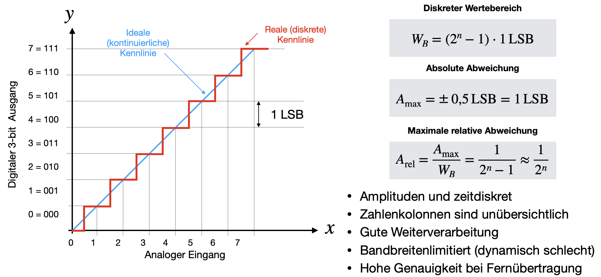
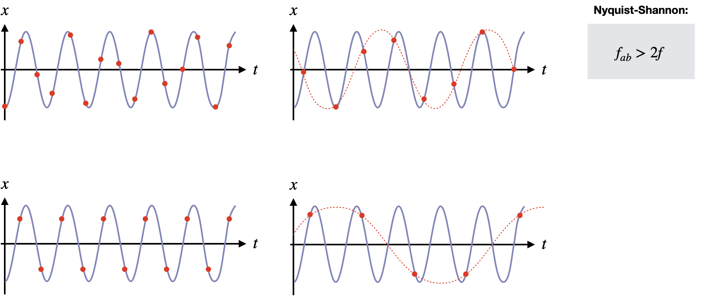

Digitalisierung
Contents
Digitalisierung#
Kennlinie#
In Folge der Digitalisierung wird der unendliche Wertevorrat einer analogen Größen, z.B. eine elektrischen Spannung, auf einen endlichen Wertevorrat abgebildet. Dadurch erhält man eine stufenförmige Kennlinien. Infolge dieser Quantisierung kann man sich vorstellen, dass Informationen verloren gegangen werden. Ein beliebig genauer analoger Spannungswert, mit unendlich vielen Ziffern, kann nur mit einem endlichen Speichervorrat im Computer verarbeitet und dargestellt werden. Erst wenn ein Grenzwert überschritten wird, wird die nächste Stufe erreicht und der Computer zeigt einen neuen Spannungswert an. Nicht aber die inkrementalen Zwischenschritte.

Die gestufte (Treppen-)Kurve im dargestellten Bild ist die reale Übertragungskurve eines 3-Bit-Analog-Digital-Wandlers (ADW). Das digitale Ausgangssignal ist so lange konstant bei einem festen Wert, wie sich das analoge Eingangssignal innerhalb eines Inkrements, also 1 LSB (least significant bit), verändert. An diesem Beispiel hier stellen wir Eingangssignale zwischen 0V und 7V mit einem 3-Bit-Wandler dar. Variiert die Eingangsspannung nur minimal, also beispielsweise zwischen 1,1V und 1,9V, so würde sich der digitale Ausgangswert tatsächlich nicht ändern und konstant 001 ausgeben.
Je feiner die Stufen (also je mehr Bits), desto besser wird die Auflösung. In der Praxis wird man die Stufung und damit die Auflösung eines ADW nur so fein wie für die zu lösende (Mess-) Aufgabe notwendig wählen, da der technische Aufwand sonst ernorm steigt und manchmal gar nicht notwendig ist, da die Auflösung auch von der Genauigkeit der Referenzinformation limitiert sein könnte (i. Allg. der Referenzspannung zur Darstellung des LSB-Intervalls).
Der diskrete Wertebereich kann wiefolgt angegeben werden:
Quantisierungsabweichung#
Aufgrund des begrenzten (diskreten) Wertebereichs ergibt sich eine absolute Messabweichung infolge der Quantisierung, die oft als absoluter Quantisierungsfehler bezeichnet wird. Diese bildet sich aus der Differenz zwischen dem digitalen Ist-Wert und dem idealisierten Kennenlinienwert (linear verlaufende ideale Kennlinie, im Bild blau gekennzeichnet).
Die maximale Abweichung beträgt hier 1LSB, wodruch die relative Messabweichung, bezogen auf den Wertebereich, wiefolgt abgeschätzt werden kann:
Beispiel: Für einen A-D-Wandler mit einer Wortbreite von 10 Bit ist die relative Abweichung infolge der Quantisierung anzugeben:
Nyquist-Shannon-Abtasttheorem (Aliasing) #
Im zeitlichen Verlauf weist der ADW ebenfalls eine Diskretisierung auf. Das heißt, dass nicht nur der Wertebereich eingegrenzt wird, sondern auch die Zeitpunkte, zu welchen Informationen abgerufen werden können. Dem kontinuierlichen Eingangssignal wird also nur eine endliche Zahl von Proben (Samples) entnommen. Jeder ADW benötigt für die Wandlung eines analogen Signals in ein digitales eine bestimmte Zeit und reagiert relativ spät. Diese Zeit ist endlich und kann nicht beliebig klein werden. Aus dem kontinuierlichen, analogen Signal wird also nur eine Schnittmenge von Messwerten zu bestimmten Zeitpunkten entnommen. Was zwischen zwei Zeitpunkte (Samples) mit dem analogen Signal passiert, wird nicht mitaufgezeichnet. Diese Zeitdiskretisierung muss allerdings nicht zwangsläufig mit einem Informationsverlust einhergehen.
Unter bestimmten Voraussetzungen, die im Abtasttheorem festgelegt sind, kann man die Signalwerte zwischen den festen Abtastzeitpunkten wieder vollständig rekonstruieren. Das Shannon’sche Abtasttheorem gibt an, wie oft eine Sinusschwingung mit Frequenz \(f\) abgetastet werden muss, damit sie aus dem digitalisieren Signal extrahiert werden kann:
Eine Schwingung muss innerhalb einer Periode mindestens 2-mal abgetastet werden. Nur wenn diese Bedingung erfüllt ist, entstehen durch die Abtastung keine Signalfehler. Diese Bedingung ist ebenfalls auf beliebe periodische Signale anwendbar. Hierbei betrachtet man die höchste Frequenz, die noch in dem Signal vorkommt, und wählt entsprechend die Nyquist-Frequenz.
Bestimmte Signale, wie z.B. Rechteckpulse oder Einzelpulse, haben eine unendlich hohe Flanke. Mathematisch werden wir im nächsten Kapitel dieser Vorlesung noch sehen, dass das bedeutet, dass deren Frequenzanteile bis ins Unendliche gehen. Das heißt eine Rechteckspannung hat unendliche hohe Frequenzen. Diese können durch Digitalisierung nicht mehr berücksichtigt werden, da keine Abtastfrequenzen von \(2\cdot \infty\), also Zeitintervallen von 0 Sekunden, erreichbar sind. In diesem Falle findet ein Informationsverlust statt.
Andersherum kann man analysieren, welche Art von Signalen mit bestimmten ADWs noch analysiert werden können. Hat mein Messsystem eine Abtastfrequenz (auch Sampling-Frequenz oder Bandbreite genannt) von \(f_\mathrm{ab} = 100\,\mathrm{MHz}\), so können nur Signale mit Frequenzanteilen bis zu \(f = 50\,\mathrm{MHz}\) verlustfrei analysiert werden.
Außerdem sollte man als Messtechniker:in stets vermeiden, dass höhere Frequenzen als diese Grenzfrequenz in den ADW gelangen. Dadurch können nämlich hässliche Effekte entstehen, die Mehrdeutigkeiten des gewonnenen Ausgangssignals zulassen. Diesen Effekt nennt man auch Aliasing. Angenommen man speist hohe Frequenzen in einen ADW ein, für die der ADW nicht mehr ausgelegt ist. Dies hat zu Folge, dass die Kurve nicht mehr mit mehr als 2 Punkten innerhalb einer Periode abgetastet wird (Nyquist-Shannon ist nicht erfüllt). Dadurch kann der ursprüngliche Kurvenverlauf nicht reproduziert werden. Man erhält irgendeinen anderen Kurvenverlauf (siehe Bild), der keinerlei Rückschlüsse auf den wahren Verlauf aufweist. Um diese Effekte zu vermeiden, werden Filter, so genannten Anti-Aliasing-Filter verwendet. Diese sind im Prinzip nur sehr steilflankige Tiefpass-Filter, welche Signalanteile bei hohen Frequenzen (> \(f_\mathrm{ab}/2\)) rausfiltern und unterdrücken. Das Signal sollte hierbei allerdings möglichst nicht in seinem Frequenzverlauf beeinflusst oder gestört werden, weshalb man bei dem Filterdesign sehr sorgfältig vorgehen muss.
Im Bild sieht man das Beispiel für 2,6 Abtastungen pro Periode (oben links), 1,4 Abtastungen (oben rechts), 2 Abtastungen (unten links) und 0,8 Abtastungen (unten rechts). Abtastungenspunkte, die 2 pro Periode unterschreiten, zeigen eine falsch-rekonstruierte Wellenform auf, was durch die rot gestrichelte Linie verdeutlicht werden soll.

Digitale Methoden haben den großen Vorteil, dass die Genaugkeit erhalten bleibt, auch wenn die Daten über große Entfernungen übertragen werden und digitale Messwerte sind einfacher weiterverarbeitbar. Die Güte der Übertragung von elektrischen Spannungen oder allgemeinen Analogsignalen ist hingegen stark von äußeren Einwirkungen abhängig, wie Drift- und Rauscheigenschaften von elektronischen Komponenten. Allerdings sind analoge Messwertausgaben häufig angenehmer und übersichtlicher, als digitale Zahlenkolonnen und analoge Verfahren arbeiten kontinuierlich, simultan und haben daher auch häufig bessere dynamische Eigenschaften, wenn man sich zeitlich veränderliche Größen ansieht.